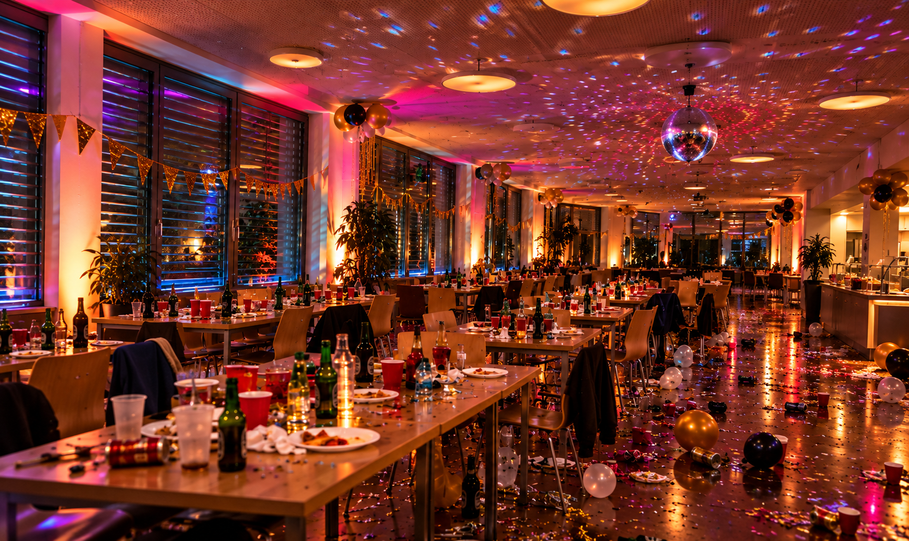
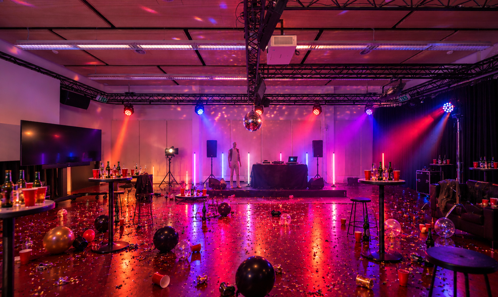

17:00
Leute trudeln ein
Alle tun kurz so, als wuessten sie genau, wohin mit Jacke und Becher.
Ersti Party eskaliert: heiss und feucht


Alle tun kurz so, als wuessten sie genau, wohin mit Jacke und Becher.
Die Smalltalk-Maschine springt an. Noch klingt alles nach Orientierungstag.
Klirr. Eine Sekunde Stille. Dann sagt jemand: “War sicher schon vorher kaputt.”
Keiner kennt die zweite Strophe. Das haelt aber niemanden auf.
Fragwuerdige Idee, ueberraschend solide Landung. Der Raum applaudiert pflichtbewusst.
Der Bass ist muede, die Leute auch. Nur die Luft bleibt noch ein bisschen da.